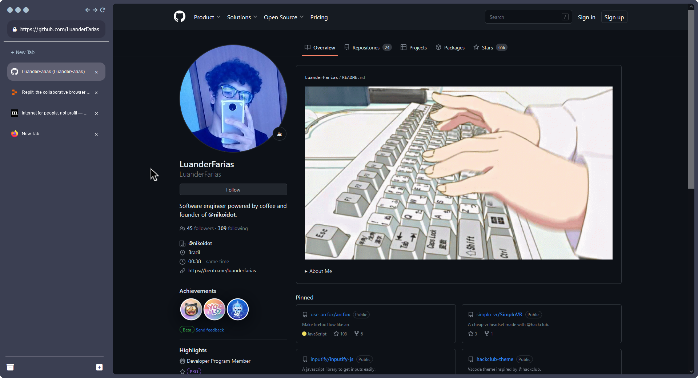

Make firefox flow like arc.
ArcFox is a pack of firefox improvements inspired by arc browser.
Try it for yourself
ArcFox is a pack of firefox improvements inspired by arc browser.
ArcFox is a pack of firefox improvements inspired by arc browser that brings cool features like sidebar tabs, browser control, search bar and much more!
Are you ready to transfrom firefox into "arc"?
Get Started